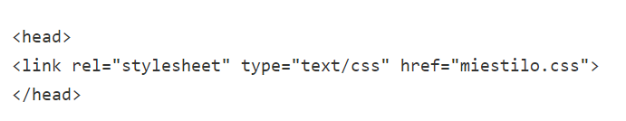

- Hola de estilo Externa
 - Hoja de estilos Interna

- Estilos en Línea

significa Cascading Style Sheets (Hoja de Estilos en Cascada). Este describe como se muestran los elementos en la pantalla HTML, el CSS ayuda a el diseño fácil de varias páginas web así que esta herramienta ayuda a ahorra tiempo mientras se trabaja en una web.
Hay 3 formas de insertar el CSS acontinuacion con sus respectivos ejemplos
|
web, N. F. (18 de mayo de 2016). www.naiarafernandez.com. Obtenido de http://www.naiarafernandez.com/conceptos-basicos-css/#Que_es_CSS